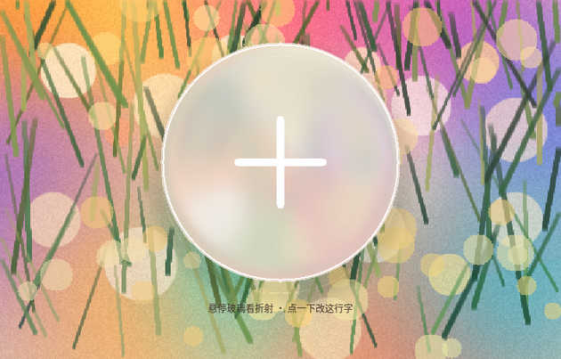

视觉与动效
液态玻璃：blur + refract 的玻璃圆盘
参考稿的滤镜链是 feGaussianBlur + feDisplacementMap：先轻度模糊，再按一张 200×200 的法线图把像素位移。把那张图解出来实测：R/G 通道编码的是一个 朝圆心的位移场

完整程序：example/38_liquid_glass/（对照稿：codepen.io/Mikhail-Bespalov/pen/MYwrMNy）
直接看效果（背景是你给的图片，不再由程序生成）：
bash ./build/example/example_38_liquid_glass --image ~/Pictures/watercolor.jpg
- 滚轮：上下滚动背景照片（玻璃固定在中间，所以同一块玻璃会折过照片的不同部分）
- 悬停圆盘：折射半径 143px → 200px（0.22s 插值过去），同时整体放大 2%、白底变亮
- 点一下圆盘：下面那行字换一次
1. 参考稿的全部秘密就四个数值
| # | 数值 | 作用 |
|---|---|---|
| ① | background-color: rgba(255,255,255,.08) |
玻璃本身几乎不挡光 —— 这一个 alpha 决定"透不透" |
| ② | box-shadow: 0 0 3px 1px rgba(255,255,255,.55) |
一圈柔和的亮边（参考稿是 2px 硬环，深色照片上太刺眼） |
| ③ | box-shadow: 0 16px 32px rgba(0,0,0,.12) |
很淡的投影，玻璃于是"浮"在背景上 |
| ④ | backdrop-filter: blur(6px) refract(143px) |
毛面 + 整块厚透镜折射 |
.glass {
background-color: rgba(255, 255, 255, 0.08);
box-shadow: 0 0 3px 1px rgba(255, 255, 255, 0.55),
0 16px 32px rgba(0, 0, 0, 0.12);
backdrop-filter: blur(6px) refract(143px);
transition: background-color 220ms ease-out, transform 220ms ease-out,
backdrop-filter 220ms ease-out;
}
① 是最容易写错的地方：alpha 拉到 0.2 以上立刻变成"白塑料"，0.08 才是玻璃。
不要写
border: 2px solid transparent：本库的border-color没有 alpha 通道 （QLUIStyle.border_color4是0xRRGGBB），透明会被当成纯白 —— 看起来就是一圈 很突兀的白边。亮边请用box-shadow。
2. refract()：参考稿里那个 feDisplacementMap
位移 = 0.5 - 单位径向 × f(t) t = 归一化半径（0 圆心、1 轮廓）
实测 f(1) ≈ 0.476 → 轮廓处的最大位移 ≈ 0.48 × 盒子尺寸
也就是说：位移朝圆心，随半径增长，轮廓处最大 —— 边缘那一圈显示的是内部画面被
压扁后的结果，像一块厚透镜。本库用 0.46·t + 0.54·t⁶ 拟合这条曲线（最大误差 ≈ 0.016）：
| 参考稿 | 本库 |
|---|---|
feGaussianBlur stdDeviation≈0.02（objectBoundingBox） |
blur(<N>px)（320px 盒子 ≈ 6.4px） |
feDisplacementMap（法线图，朝圆心） |
refract(<N>px)（同一方向、同一条径向曲线） |
refract(N) 的语义：圆心处不动，越靠外位移越大，轮廓处最多 N px，方向朝圆心。
- 半径怎么选：≈ 0.48 × 盒子尺寸。例程的圆盘 300px，取 143px；悬停时 200px（1.4×）。
- 只写
refract()也可以 —— 那就是一块干净的放大镜；只写blur()就是普通毛玻璃。 两者一起写才是"液态"。 - 函数任意顺序、可以只写其中一部分；写其它函数（
brightness()等）构建期报错。 - 上限 255px（
backdrop_refract是 8 位字段）。
3. 悬停：backdrop-filter 也是可过渡属性
折射半径是"玻璃变厚"的唯一来源，不插值的话鼠标一放上去整块玻璃会瞬间跳一下。
所以 transition 里要写 backdrop-filter（本库会同时插值 blur / saturate /
refract 三个参数）：
transition: background-color 220ms ease-out, transform 220ms ease-out,
backdrop-filter 220ms ease-out;
注意本库的 transition 只支持一组时长/缓动（trans_ms / trans_ease 只有一份），
三段写不同时长会在构建期报错。回归测试：test_transition_backdrop。
4. 为什么 blur() 只有 6px
模糊的目的是"看不清细节"，不是"看不见东西"。半径一大，背景就被糊成一团均值色，
玻璃立刻变灰塑料。参考稿的 stdDeviation="0.02" 在 320px 的圆盘上就是 6.4px，这里取 6px。
厚度感来自 refract()，不是来自模糊半径。
5. 背景照片：--image + 滚轮滚动
背景不再由程序生成（旧版本用 LCG 画了一张水彩图）。现在：
./example_38_liquid_glass --image photo.jpg
./example_38_liquid_glass --image photo.png --size 900x600
./example_38_liquid_glass --image photo.jpg --scroll 250 --dump /tmp/g.ppm
- 运行期解码（PNG / BMP / QOI；构建带 libjpeg 后端时也支持 JPEG），
注册成资源名
photo，对应<img src="photo">； - 高分辨率壁纸直接支持：解码时临时放开像素预算
（
ql_image_set_decode_budget(256MB)），解完按窗口需要的尺寸做一次 box-filter 降采样（宽 ≤ 2×窗口、夹在 1280~2048，总像素 ≤ 6M）， 只保留显示用的那份像素。2700×4800 的手机壁纸 → 1440×2560； - 输入文件上限 32MB（
QL_CFG_IMAGE_MAX_ENCODED_BYTES），像素上限QL_CFG_IMAGE_MAX_PIXELS（默认 4096×4096）； - 照片显示得比窗口高（
__PHOTO_H__由main.c按图片比例替换成具体 px， 且至少 1.6×窗口高），放在overflow-y: scroll的容器里； - 滚轮由例程自己的事件过滤器接住，直接对容器调用
ql_ui_scroll_by()： 玻璃/舞台铺满整屏，命中链里没有可滚动祖先，靠界面层自己的命中测试滚不到照片。
没有 --image 时程序会打印用法退出；也可以把图片放到例程目录、命名
background.png / background.jpg 作为默认背景。
6. 实现上必须做对的三件事
- 模糊的采样范围要比盒子大一圈（按
3·σ）。模糊核本来就要读盒子外面： 只糊盒内、边缘靠钳位补的话，得到的是"这块方形的均值色"，半径一大就发灰， 四边还会留一圈方形的边。折射朝圆心采样、不读盒子外面，不需要为它外扩。 - 结果只写进轮廓之内（按圆角覆盖率与原像素混合），轮廓外一个像素都不动 —— 否则四个圆角缺口里会渗出"方的模糊块"。
- 三段盒式卷积近似高斯。两段是三角核，边缘有一道可见的折线；三段才接近钟形。
CPU 与 GL 两个后端走同一套参数与顺序，test_gl_vs_cpu 对着色器做逐像素对拍。
7. 限制（都是明确报错，不静默降级）
| 限制 | 说明 |
|---|---|
| 函数集合 | 只有 blur() / saturate() / refract()，其它函数构建期报错 |
refract 上限 |
0~255px（backdrop_refract 是 8 位字段） |
| 边框 alpha | border-color 没有 alpha 通道：transparent 会被画成实色，半透明亮边请用 box-shadow |
| 过渡时长 | transition 各段必须共用同一组时长/缓动 |
| 平台档 | 属于 QL_FEAT_CSS_BLUR（PC 档特性）；MCU 档恒关 |
| 层数 | 玻璃套玻璃天然可用（先采样"已画好的内容"，再画自己），但每多一层就多一次模糊 |
8. 性能（本机 720×460、GL 后端、240 帧）
| 项 | 数值 |
|---|---|
| 帧时间 p50 / p95 | 16.62 ms / 17.68 ms |
| 其中等 swap | 16.33 ms（几乎全是等垂直同步） |
| 实际渲染 | 约 0.3 ms |
一帧的预算几乎全花在 vsync 上，真正画一张"照片 + 折射玻璃"只要零点几毫秒。 成本主要随玻璃元素数量线性增长（每块玻璃一次模糊 + 一次折射位移）。
9. 写玻璃时踩过的坑（都已修 / 都已记录）
9.1 渐变的两个色标共用一个 alpha（已修）
以前一个背景只有一个 alpha：rgba() 写在渐变色标里会被忽略，于是"上亮下透"
的玻璃做不出来。现在两个色标各带自己的 alpha，插值时"颜色 + alpha"一起插。
兼容规则：两个色标都不写 alpha 时沿用 background-color 的 alpha。
9.2 box-shadow: inset + 圆角=半边长 → 四角被涂满（已修）
正圆/药丸的圆角正好等于半边长，矩形四角落在轮廓外面，而内阴影的覆盖率公式
在那一片恒等于 1 —— 四个角被整片涂成阴影色，看着像"圆外面套了个方框"。
修法是片元里再乘一个"在轮廓内"的覆盖率；回归测试在 test_gl_vs_cpu。
9.3 transition 的可过渡属性
background-color / opacity / color / border-color / border-radius /
transform / clip-path / backdrop-filter。写别的会在构建期报错（不静默忽略）。